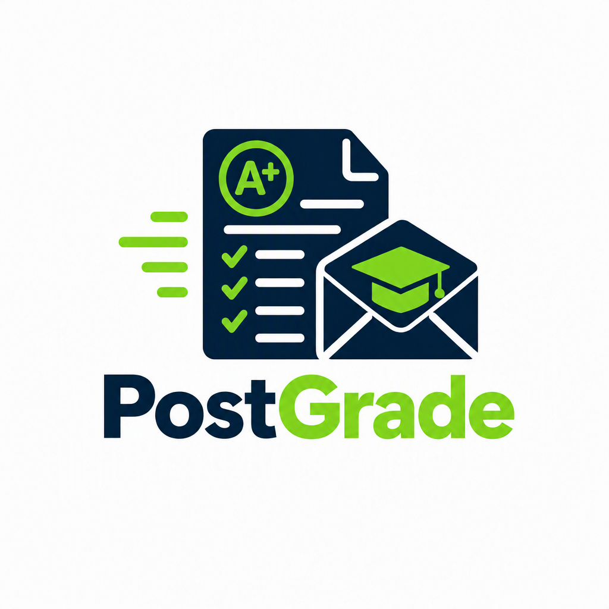

Projects

PostGrade: Student Assessment Management System
Aug – Oct 2026Developed backend functionality for a student assessment system in a university software development team, using Python, Django, Django REST Framework and PostgreSQL. Built CSV import and assessment management workflows, took part in testing, debugging and code reviews, and wrote technical and project documentation.
ProFit Fitness Database System
Feb – May 2026Collaborated in a team to design and implement a relational database for a fitness centre covering memberships, bookings, inventory, equipment maintenance and financial transactions. Developed business rules, ER diagrams, dependency diagrams and schemas following the Database Life Cycle (DBLC) methodology, and implemented a 19-table Oracle SQL database with keys, constraints, indexes, views and complex queries.
Business Network Infrastructure Design
Apr – May 2026Led a team in designing a business network in Cisco Packet Tracer based on real-world requirements — network segmentation, departmental isolation, wireless connectivity and internet access — and prepared network documentation and budget considerations using realistic hardware costs.
Potch Holes Information System
Mar – Sep 2025Worked in a team to develop an information system for a non-profit organisation focused on pothole reporting and repair management — contributing to requirements documentation, use-case diagrams, process models and feasibility analyses, and assisting with relational database design.